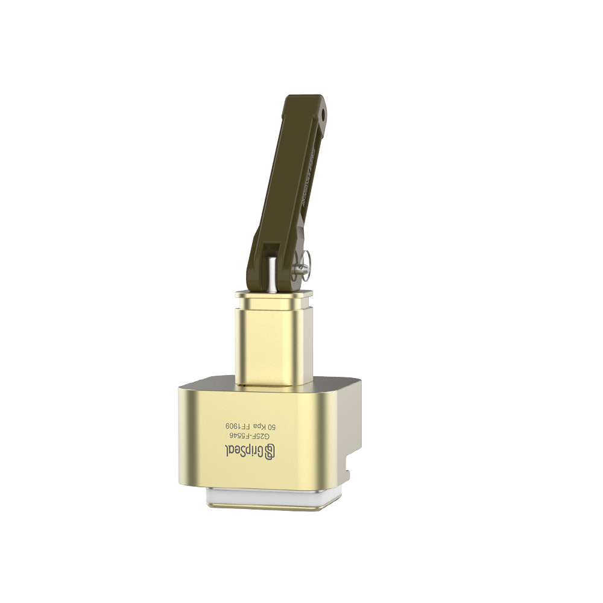
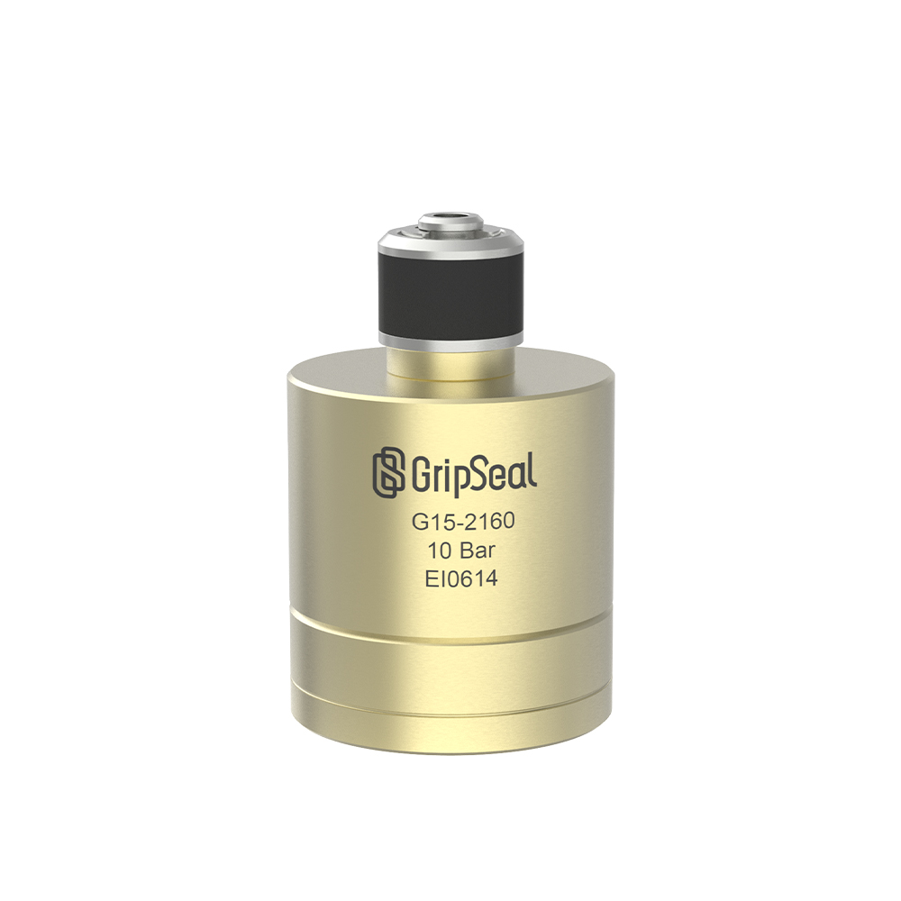
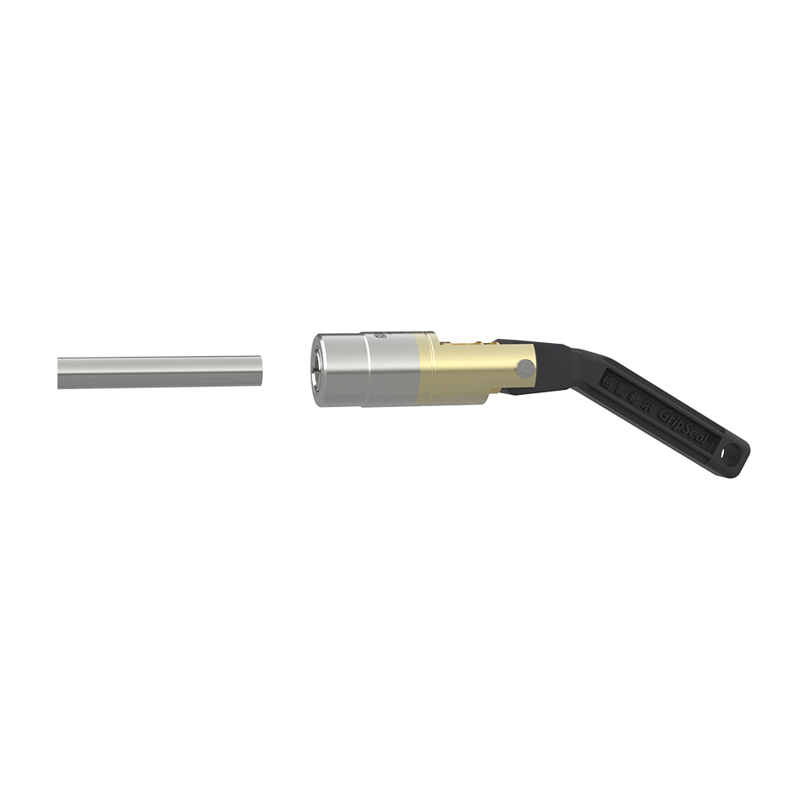
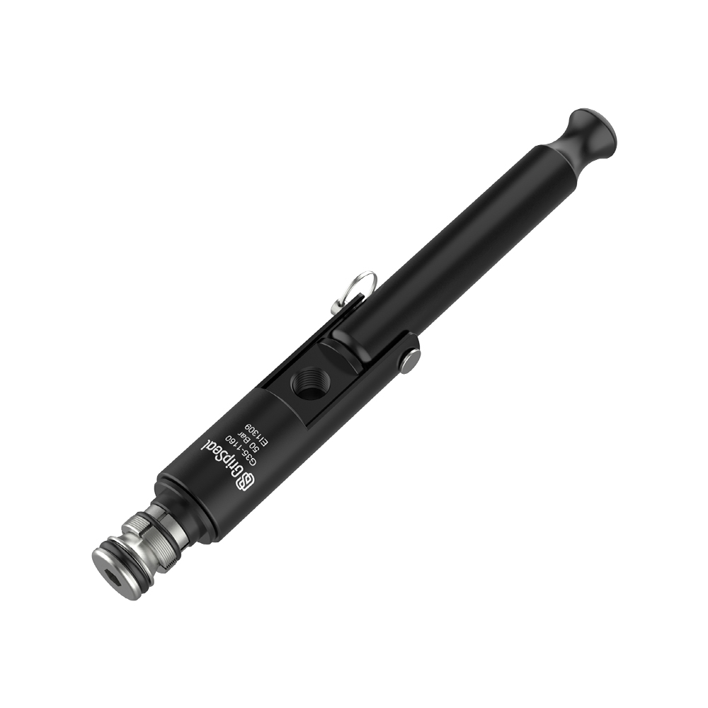
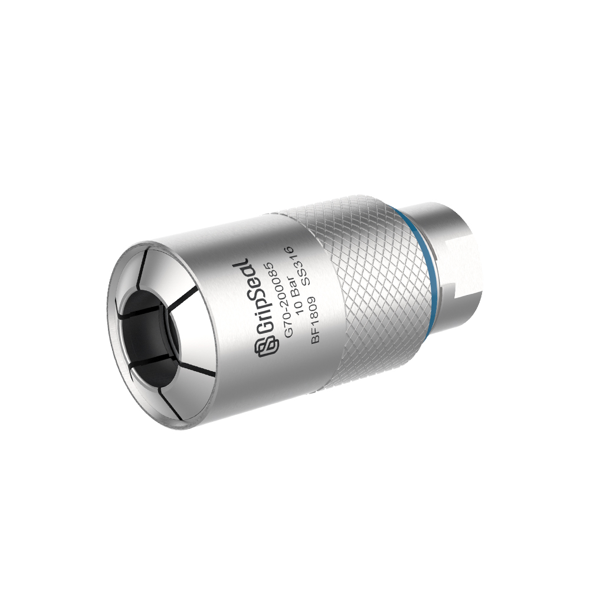
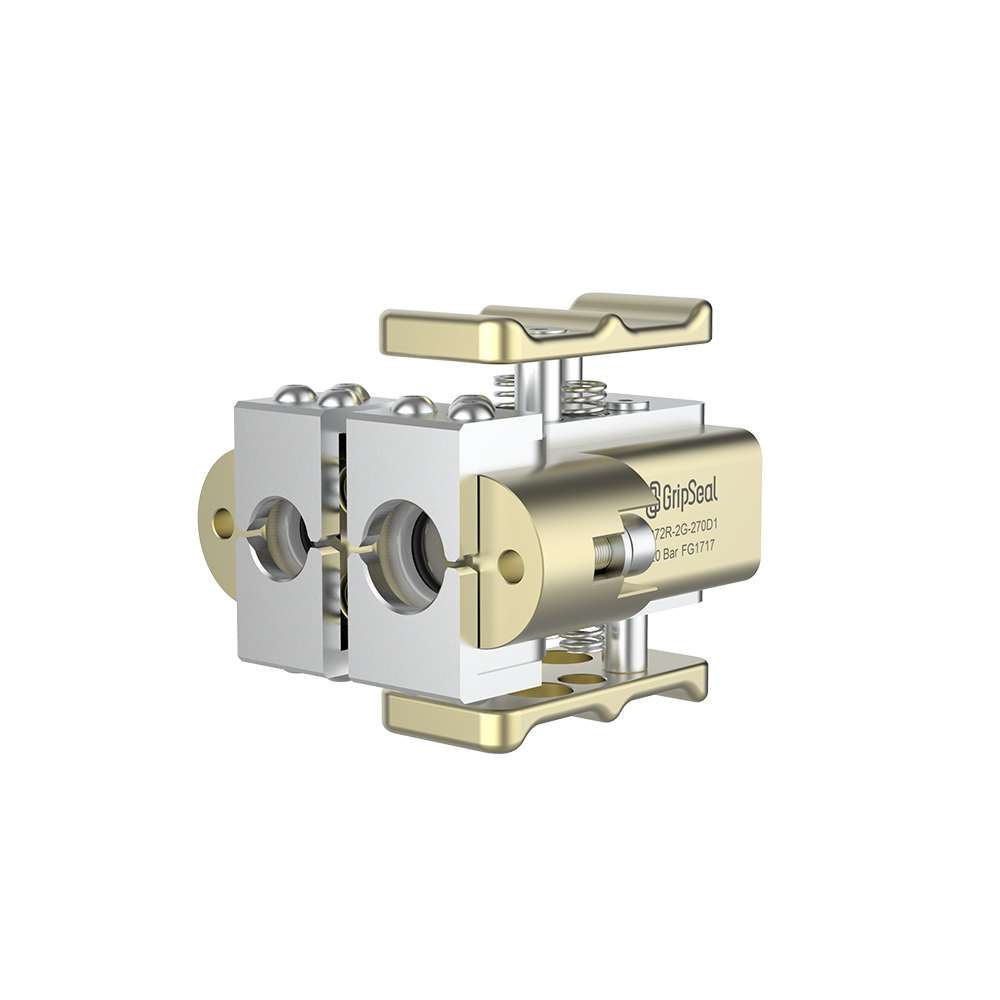

按管路 / 接头类别
与国内网站一致的产品分类
这一层遵循国内产品通道：客户先选择管路或接头类型，再进入分类页、系列列表和型号详情页。

01
液冷接头
适用于冷却回路、热管理模块、电池系统、电子冷却和低泄漏维护接口。

02
螺纹密封连接器
适用于内螺纹、外螺纹、高压螺纹口和重复螺纹测试连接。

03
冷却水管接头
适用于冷却水管、冷却液进出口管路，以及需要快速重复密封的生产测试口。

04
燃油管接头
适用于燃油管接口、汽车管路，以及对密封稳定性要求高的泄漏或压力测试工位。

05
直管接头
适用于直管端和圆管接口，连接器可在内径或外径位置密封。

06
扩口管接头
适用于扩口管端和胀形管接口，密封面和管端形状会决定系列选择。

07
气瓶充装接头
适用于气瓶充装、气体充注，以及重视安全、速度和密封可靠性的重复连接点。

08
公母快速接头
适用于成对快插接口、维护连接和可拆卸线边连接点。